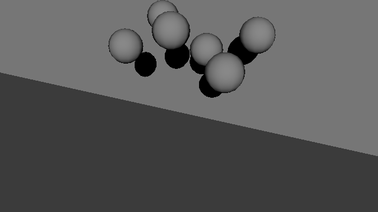
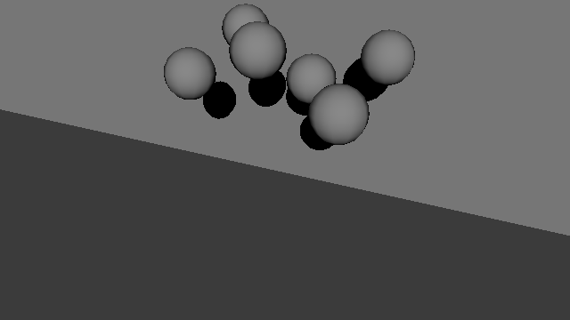
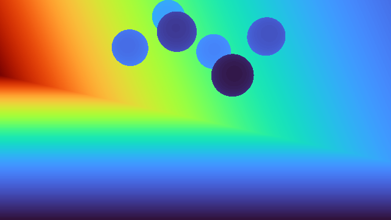
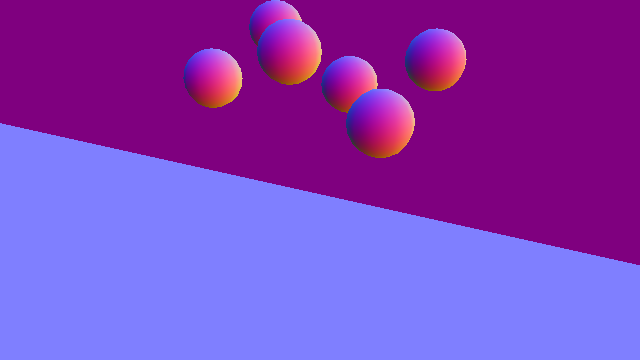
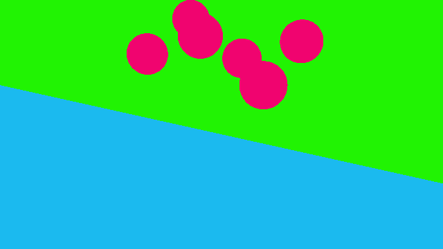
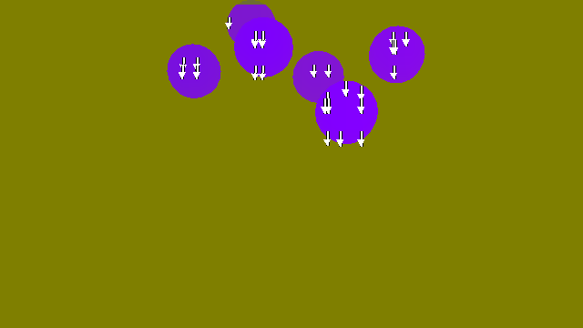
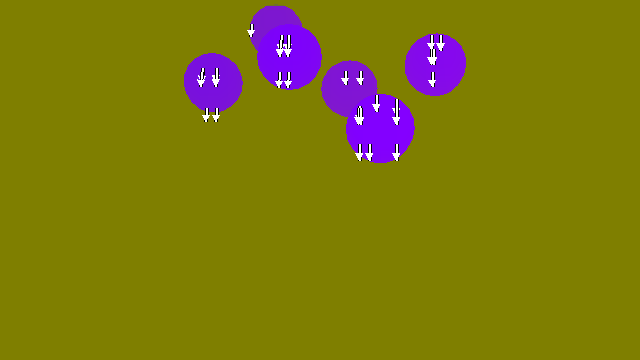

渲染器#
渲染器为策略观测和合成数据流程生成相机传感器缓冲区。它们不同于 可视化器 ；后者为检查、调试和录制提供面向人的交互式视图。Isaac Lab 采用可插拔渲染器架构，所有实现均遵循 BaseRenderer 定义的接口。
Isaac Lab 支持三种渲染后端。其运行方式、输出范围和限制见 渲染器详情 ，各输出在不同后端的支持情况见 渲染器支持情况 。
重要
推荐使用 OVRTX 作为 RTX 渲染器。Isaac RTX 是旧版 RTX 渲染器，继续用于必须在 Isaac Sim 内运行的工作流；新的 RTX 相机工作流应使用 OVRTX。
选择渲染后端#

基于 Warp 的光线追踪，采用直接光照。适用于更重视相机吞吐量和内存占用、对材质与光照保真度要求较低的场景。
renderer=newton_renderer

不依赖 Kit 的 RTX 渲染，提供路径追踪和 Minimal 模式。适用于无需 Isaac Sim、但需要 RTX 图像质量及其渲染输出的场景。
renderer=ovrtx

在 Isaac Sim 内进行 RTX 渲染。仅在工作流必须运行于 Isaac Sim 进程中时选用。
renderer=isaacsim_rtx
渲染器输出概览#
各渲染器使用相同的场景、相机、灯光和材质：六个球体分别采用镜面、透明、半透明、哑光、光泽和自发光材质。RGB 以动画展示，其他输出是同次运行中的静态图。Newton Warp 和 OVRTX 使用 Newton 物理引擎，Isaac RTX 使用 PhysX，因此球体位姿可能有所不同。
Minimal 各行对应 simple_shading_* 输出。标量、向量和标签输出经过颜色映射以便展示：深度由近处的紫色渐变为远处的红色，法线的 X、Y、Z 分量分别映射为红、绿、蓝，运动向量箭头表示采样点在图像空间中的运动。相机实际返回的原始张量见 输出类型 。
输出 |
Newton Warp |
OVRTX |
Isaac RTX（传统） |
|---|---|---|---|
RGB |
|
|
|
Minimal：恒定漫反射 |
不支持 |
 |
 |
Minimal：MDL 漫反射 |
不支持 |

|

|
Minimal：完整 MDL 材质 |
不支持 |

|

|
反照率 |

|

|

|
深度 |
 |

|
|
法线 |
 |

|
|
语义分割 |
 |

|
|
实例分割 |

|
||
运动向量 |
不支持 |
 |
 |
渲染器详情#
展开下方各渲染器，可查看其运行时、支持搭配的物理后端、输出范围、配置方式和典型用途。
Newton Warp 渲染器
运行时与物理后端： 基础安装自带的轻量级 Warp 光线追踪器，不依赖 Kit。可搭配 Newton、OvPhysX 或 Isaac Sim PhysX。
输出范围： 采用直接光照，提供 RGB、反照率、深度、法线、语义分割和实例分割。不提供运动向量或 RTX 材质光传输。
适用场景： 吞吐量比完整 RTX 保真度更重要的训练流程。
OVRTX 渲染器
运行时与物理后端： 通过
isaaclab_ov扩展和ovrtxv0.5.1 运行时提供不依赖 Kit 的 RTX 渲染。可搭配 Newton 或 OvPhysX，无法与 Kit 共处同一进程。输出范围： 提供 RTX Minimal 和照片级真实感渲染，以及几何、运动和标签输出，并支持 异步渲染 。
配置：
OVRTXRendererCfg适用场景： 无需运行 Isaac Sim 即可获得 RTX 图像质量。
Isaac RTX 渲染器（旧版）
运行时与物理后端： 在 Isaac Sim 内运行 NVIDIA 的 Omniverse RTX 渲染管线，可搭配 Isaac Sim PhysX 或 Newton。
输出范围： 提供 RTX Minimal（Isaac Sim 6.0 及以上版本）和照片级真实感渲染，相机输出类型最为丰富。
适用场景： 必须在 Isaac Sim 或 Kit 内运行的工作流。
选择渲染功能#
下文按用途介绍渲染方式：面向训练吞吐量的简化渲染、追求完整 RTX 图像质量的照片级真实感渲染，以及几何、运动和标签等高级输出。命令使用不带后缀的 Isaac-Cartpole-Camera 任务，无需修改 Python 即可尝试各模式。
简化渲染#
简化渲染优先保证吞吐量和可预测的成像结果，而非完整光传输。Newton Warp 提供轻量级光线追踪 RGB 路径。OVRTX 和 Isaac RTX 则提供 RTX Minimal 模式，关闭间接光照，并提供三个层次的材质计算：
常量漫反射 使用单一的恒定表面颜色。
漫反射 MDL 是 Isaac Lab 对带纹理漫反射着色所采用的稳定名称。
完整 MDL 是 Isaac Lab 对漫反射、光泽和自发光材质求值所采用的稳定名称。
请求 simple_shading_* 输出会将该相机切换为 RTX Minimal，因此常规彩色图像应由另一台相机输出。RTX Minimal 使用场景中的第一盏平行光，并生成硬阴影。渲染器层面的设置和限制见 OVRTX Minimal 模式 及 RTX Minimal 渲染器 文档。


如果轻量 RGB 观测已经足够，Newton Warp 是不依赖 Kit 的选择。
uv run isaaclab train --rl_library rsl_rl \
--task Isaac-Cartpole-Camera \
physics=newton_mjwarp renderer=newton_renderer presets=rgb
显式启用方向光阴影：
uv run isaaclab train --rl_library rsl_rl \
--task Isaac-Cartpole-Camera \
physics=newton_mjwarp renderer=newton_renderer presets=rgb \
env.scene.tiled_camera.renderer_cfg.enable_shadows=true
常量漫反射
uv run isaaclab train --rl_library rsl_rl --task Isaac-Cartpole-Camera \
physics=newton_mjwarp renderer=ovrtx presets=simple_shading_constant_diffuse
带纹理漫反射
uv run isaaclab train --rl_library rsl_rl --task Isaac-Cartpole-Camera \
physics=newton_mjwarp renderer=ovrtx presets=simple_shading_diffuse_mdl
漫反射、光泽和自发光材质求值
uv run isaaclab train --rl_library rsl_rl --task Isaac-Cartpole-Camera \
physics=newton_mjwarp renderer=ovrtx presets=simple_shading_full_mdl
常量漫反射
uv run isaaclab train --rl_library rsl_rl --task Isaac-Cartpole-Camera \
physics=isaacsim_physx renderer=isaacsim_rtx presets=simple_shading_constant_diffuse
带纹理漫反射
uv run isaaclab train --rl_library rsl_rl --task Isaac-Cartpole-Camera \
physics=isaacsim_physx renderer=isaacsim_rtx presets=simple_shading_diffuse_mdl
漫反射、光泽和自发光材质求值
uv run isaaclab train --rl_library rsl_rl --task Isaac-Cartpole-Camera \
physics=isaacsim_physx renderer=isaacsim_rtx presets=simple_shading_full_mdl
逼真渲染#
这里的 照片级真实感渲染 指完整 RTX 实时路径追踪（RTPT）模式下的常规 RGB 路径，只是按能力进行分类，并非 Isaac Lab 预设名称。当材质外观、反射、透明效果、光照或配套 RTX AOV 输出比极低的渲染延迟更重要时，可选用此路径。OVRTX 在不依赖 Kit 的情况下提供该能力，Isaac RTX 则在 Isaac Sim 内提供。详见 OVRTX 实时路径追踪 及 Isaac Sim 渲染模式 文档。
uv run isaaclab train --rl_library rsl_rl --task Isaac-Cartpole-Camera \
physics=newton_mjwarp renderer=ovrtx presets=rgb
uv run isaaclab train --rl_library rsl_rl --task Isaac-Cartpole-Camera \
physics=isaacsim_physx renderer=isaacsim_rtx presets=rgb
高级渲染输出#
除 RGB 外，渲染器生成的缓冲区还提供材质、几何、运动和标注信息：
反照率 将材质基础色与光照分离。
深度 测量沿光轴的距离，用于几何感知和重建。
法线 表示局部表面朝向。
语义分割 按类别划分像素， 实例分割 则区分各个物体。
运动向量 表示每个像素在图像空间中的运动，需要前一帧历史信息。
通过 data_types 请求一个或多个缓冲区。配置示例见 配置相机 ，可用名称、张量形状、数据类型和含义见 输出类型 。环境级 presets=... 选择器是任务定义的快捷配置，并不涵盖所有相机输出。
各后端支持的输出不同。选择渲染器前，请检查 相机渲染器支持矩阵 。例如，OVRTX 和 Isaac RTX 提供运动向量，Newton Warp 不提供。上方 渲染器视觉比较 展示了同一场景中的这些输出。
备注
可视化标记是可视化器提供的调试叠加内容，不是相机输出。其支持情况独立于相机渲染器：Kit、Newton GL、Rerun 和 Viser 可视化器支持标记，实验性的 Newton RTX 可视化器不支持。可视化器支持矩阵见 可视化 。
备注
基于相机的强化学习中的时序信息。 与采用时序抗锯齿的 RTX 模式（DLSS、DLAA、TAA）不同，Newton Warp 渲染器不会将前一帧信息引入当前图像。依赖速度等视觉线索的相机控制任务，应显式添加时序观测，例如在任务中叠帧，而不是依赖特定渲染器产生的画面特征。
性能#
环境性能测试 展示了各物理后端与渲染器组合的吞吐量。选择相机任务，例如 Isaac-Cartpole-Camera，然后打开 性能测试 中的 发布版 标签页。相机性能测试将 Newton Warp 的 rgb 与 OVRTX、Isaac RTX 的 RTX Minimal 模式（simple_shading_full_mdl）进行比较；这是 RTX 中最接近 Newton Warp 直接光照 RGB 的模式。在发布版性能测试中，Newton Warp 的吞吐量最高，OVRTX 则优于 Isaac RTX。
Isaac RTX 按环境划分场景#
Isaac RTX 渲染器默认启用按环境划分场景，为每个 /World/envs/env_<index> 层级及其相机分配匹配的场景分区标记，使平铺视图仅渲染对应环境的几何。
通过 IsaacRtxRendererCfg 配置该行为：
from isaaclab_physx.renderers import IsaacRtxRendererCfg
renderer_cfg = IsaacRtxRendererCfg(enable_scene_partitioning=False)
场景分区与显示所有环境的观察视图是两个独立设置。只有启用 Kit 视口，或请求 Kit 可视化、录制、直播流或 XR 时， KitLauncher 才会在 RTX 启动前启用观察模式支持。常规无界面训练和相机传感器运行保持该功能关闭，使平铺相机不受观察模式世界空间布局约束的影响。
global_settings.show_all_partitions_by_default 对应同一个进程级全局 RTX 设置，并不是独立功能。其默认值 None 保留 KitLauncher 在启动时的选择。显式赋值会在构建 Isaac RTX 渲染器时覆盖该设置。启用时，环境必须在空间上分开，因为分区边界重叠可能使内容出现在其他环境中或消失。关闭时，Kit 视口只显示选中的环境。
此设置不影响 OVRTX；OVRTX 始终对多环境场景进行分区。
环境层级之外的 prim 保留在共享背景分区中。环境持有的 PointInstancer 标记可以为每个实例携带一个匹配的场景分区标记；没有此类所有权信息的标记保持共享。
警告
Isaac RTX 与 OVRTX 渲染器将场景分区数量限制为 15625。启用场景分区时，如果请求超过 15625 个环境，多出的分区会被丢弃， rtx.scenedb.plugin 会记录 SceneDbContext : Maximum number of scene partitions (15625) reached. Additional scene partitions will be discarded. 。超过该数量的环境会与其他环境共享分区，因此其平铺相机画面可能显示其他环境的几何。详情见 场景分区上限为 15625 个 。
架构概览#
渲染器系统由以下部分组成：
BaseRenderer ：定义渲染生命周期和接口的抽象基类。
RendererCfg ：
BackendCfg的子类；各后端扩展它以提供专用选项，并在class_type中声明具体实现。具体实现 ：扩展软件包中的后端专用渲染器。
SimulationContext ：在后端注册表中持有渲染器实例，通过
get_or_create_backend(renderer_cfg)，在具体类型相同且配置相等的请求之间共享实例。RenderContext ：通过仿真注册表的过滤视图，协调初始化、舞台准备、场景更新和材质写入器，不负责构建、缓存或关闭渲染器实例。
import isaaclab.sim as sim_utils
from isaaclab.renderers import BaseRenderer
from isaaclab_newton.renderers import NewtonWarpRendererCfg
# Create a Newton Warp renderer (no Isaac Sim required)
sim_ctx = sim_utils.SimulationContext.instance()
# Reuse a matching renderer or construct one through instantiate(cfg).
renderer: BaseRenderer = sim_ctx.get_or_create_backend(NewtonWarpRendererCfg())
assert isinstance(renderer, BaseRenderer)
使用 RTX 渲染器时（需要 Isaac Sim）：
import isaaclab.sim as sim_utils
from isaaclab.renderers import BaseRenderer
from isaaclab_physx.renderers import IsaacRtxRendererCfg
# Create an RTX renderer
sim_ctx = sim_utils.SimulationContext.instance()
# Reuse a matching renderer or construct one through instantiate(cfg).
renderer: BaseRenderer = sim_ctx.get_or_create_backend(IsaacRtxRendererCfg())
RTX 渲染器设置见 选择与配置渲染器 。
批量渲染相机#
render_batch() 接受同一渲染器持有的一组渲染数据对象。渲染前准备相机位姿、内参和共享场景状态，之后读取各相机输出。空序列不会触发渲染。
renderer.render_batch([first_render_data, second_render_data])
renderer.read_output(first_render_data, first_camera_data)
renderer.read_output(second_render_data, second_camera_data)
render() 仍接受单个渲染数据对象。默认的 render_batch() 实现逐项调用 render() ，因此已有自定义渲染器和单相机调用方无需修改。OVRTX 同时推进所有已注册渲染产品，但只发布所请求相机的观测。
主动更新传感器时（ scene.cfg.lazy_sensor_update=False ）， scene.update() 按场景顺序推进传感器时钟，并收集支持批处理的传感器。循环结束后，相机批处理实现会准备其余到期的采集请求。 render_into_cameras() 按渲染器实例分组，渲染各组并读取输出。上下文不保留待处理相机队列，每个相机维护自己的更新周期和重置状态。
按需更新传感器时，读取相机的 data 只刷新该相机的传感器缓冲区和采集时间戳，不会刷新共享渲染器的其他相机传感器。
核心概念#
使用仿真注册表： 始终通过
sim_ctx.get_or_create_backend(IsaacRtxRendererCfg())等方式，使用渲染器专用配置类获取渲染器。不要直接导入或实例化具体后端类，例如IsaacRtxRenderer、OVRTXRenderer；类名和软件包位置属于实现细节，可能不经通知就改变。轻量配置导入： 导入渲染器配置类不会引入后端专用依赖。
class_type在构建渲染器时按需解析，后端未安装时，构建可能失败。import isaaclab.sim as sim_utils from isaaclab.renderers import BaseRenderer # Lightweight: does not import OVRTX backend dependencies from isaaclab_ov.renderers import OVRTXRendererCfg # Lazily loads ovrtx when instantiated; may fail if isaaclab_ov / ovrtx is not installed sim_ctx = sim_utils.SimulationContext.instance() renderer: BaseRenderer = sim_ctx.get_or_create_backend(OVRTXRendererCfg())
安装 OVRTX 渲染器#
OVRTX 渲染器由 isaaclab_ov 扩展提供。扩展源码包随核心安装发布，但渲染器的 ovrtx 运行时 wheel（公开 PyPI 上发布的 ovrtx 软件包）默认 不会 安装，必须显式选择。OVRTX 不需要 Isaac Sim。
通过 Isaac Lab CLI 使用 ov[ovrtx] 选项安装：
# Install the ovrtx runtime wheel on top of an existing install
./isaaclab.sh -i ov[ovrtx]
备注
单独使用 ov 选项 不会 安装任何运行时 wheel，因为源码包已包含在核心安装中。请使用 ov[ovrtx] 或 ov[all] 安装 ovrtx 依赖。
也可以直接从 PyPI 安装公开的 ovrtx 软件包：
pip install "ovrtx==0.5.1.385782"
不透明渲染数据：
create_render_data()返回的渲染数据对象传给后续渲染器方法。调用方应将其视为完全不透明的对象；通过属性读写检查或修改它是不恰当的用法，会破坏 API 约定。
备注
BaseRenderer 仍在积极开发，可能不经通知就改变。
异步渲染#
async_rendering 在渲染下一张图像时，返回相机的前一次采集结果，使渲染能够与仿真及 Python 工作重叠。首次采集（包括重置后的首次采集）会等待新图像，ovstage 路径保持同步。
延迟为一次采集，不一定等于一个物理步或控制步。状态观测仍是当前值，因此启用此选项会改变策略观测的时序，训练可能需要考虑该延迟。物理与策略计算也可能使用 GPU。
对于每个环境步采集一次的相机，稳态运行过程如下：
Synchronous: physics k -> submit image k -> wait/read image k -> policy
Asynchronous: physics k -> submit image k -> wait/read image k-1 -> policy
| |
+---- image k renders ------------+--> physics k+1
首次准备完成后立即返回第一张图像，下一次采集时会再返回一次。
每个相机持有自己的待发布观测。读取相机 A 不会改变相机 B 的像素或元数据，即使它们共享一次原生渲染提交。重置丢弃该相机的待发布观测。部分环境重置会重新准备整个平铺相机产品，不会使其他相机失效。
camera.data.pos_w 、 camera.data.intrinsic_matrices 等实时字段仍是当前值。将延迟像素与位姿或标定配对时，应使用采集元数据，例如进行深度反投影时：
data = camera.data
depth = data.output["distance_to_image_plane"]
capture = data.info["distance_to_image_plane"]["capture"]
position, orientation = capture["pos_w"], capture["quat_w_world"]
intrinsics, frame = capture["intrinsic_matrices"], capture["frame"]
之后的采集不会改变已有采集元数据。直接调用渲染器时，在提交采集前使用 prepare_capture() ，通过 read_output() 发布结果。
SDP 填充渲染器持有的变换与几何缓冲区，包括可变形网格、粒子和线缆。两个缓冲区在每次写入时交替使用，只有 OVRTX 消费完后才能复用。因此，物理仿真可以在前一次采集仍在渲染时更新实时数组。